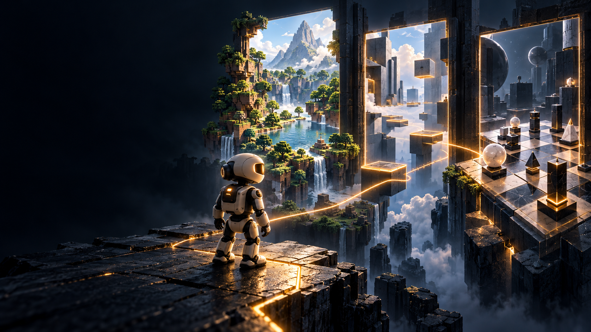

01
Dataset
ExperienceWhat experience can the player learn from?
Gameplay trajectories connect observations, goals, actions, and outcomes. Scale, action fidelity, and diversity shape the behaviors a player can acquire.

A Survey of Foundation Models in Virtual Worlds
How does one player grow across many worlds?
We trace the experience players learn from, the systems they act through, and the evidence that their abilities carry over. Games provide the challenges and feedback that make this growth possible.
SURVEY OVERVIEW
Follow a player from interaction to adaptation, and into the worlds that test what it has learned.
Imagine one player entering an unfamiliar world. How can foundation models learn from failure, recover, and carry that experience into the next game?
想象一个玩家走进陌生的世界。基础模型如何从失败中学习、恢复，并将这份经验带入下一个游戏？
It starts by interacting: observing, acting, and discovering what follows. Success and failure can reveal where a strategy works, and what the next attempt should change.
一切始于交互：观察、行动，再去发现结果。成功与失败可以揭示策略何时有效，以及下一次尝试该如何调整。
But growth also depends on the worlds we learn from. Stable rules, persistent state, meaningful goals, and reliable feedback give each decision consequences.
但成长也取决于我们从中学习的游戏世界。稳定的规则、连贯的状态、有意义的目标与可靠的反馈，让决策影响局面。
Our survey connects four pillars around the player: datasets for experience, models for capability, harnesses for interaction, and benchmarks for evidence.
我们的综述以玩家为中心，连接四个支柱：数据集提供经验，模型承载能力，运行框架支持交互，基准测试提供证据。
Growth can take two paths. Training updates model weights; with weights fixed, feedback can still reshape memory, beliefs, and plans. Each path needs different evidence.
成长可以沿着两条路径展开。训练会更新模型权重；权重固定时，反馈仍能帮助玩家调整记忆、判断与计划。每条路径都需要不同的证据。
Now change the layout, controls, or goal. Familiar strategies may break, opening new opportunities to adapt as the challenges expand.
现在，改变地图、操作方式或目标。熟悉的策略可能失效，而不断扩展的挑战，也带来了新的适应机会。
So how do we know the player improved? Measure depth, coverage at a stated skill level, and transfer to unseen games. Verify those gains on fresh, independent episodes.
那么，如何知道玩家真的进步了？衡量能力深度、在既定能力标准下的覆盖范围，以及向未见游戏的迁移。再用全新且独立的游戏回合验证这些进步。
Explore Towards Generalist Game Players and our living research collection. Discover the players that learn to act, and the worlds that help them grow.
阅读《迈向通用游戏玩家》，探索我们持续更新的研究合集。关注学会行动的玩家，以及帮助它们成长的世界。
START HERE
A player's development connects all four pillars. Follow the question closest to yours.
Read the field guide ↓Gameplay trajectories connect observations, goals, actions, and outcomes. Scale, action fidelity, and diversity shape the behaviors a player can acquire.
Reasoning, perception, control, and prediction must work together. Shared representations need to transfer skills while preserving the precision each game requires.
Memory, planning, perception tools, and action interfaces connect a model to its world. Information access, latency, and recovery shape the deployed player.
Declared interfaces, held-out games, repeated trials, and time budgets make claims about competence, coverage, and transfer interpretable.
THE GROWTH PATH
Five research targets broaden what a player can handle. Each needs its own evidence; these are goals for the field, not stages already completed by current agents.
Compose atomic skills into reliable long-horizon behavior across held-out goals, task chains, and seeds.
Complete long task chains within the time budget and recover from intermediate failures.
Carry useful skills into games with related interfaces and interaction structure, while testing new mechanics.
High held-out coverage with the same checkpoint and protocol, without per-title retuning.
Sustain competence when observations, controls, dynamics, and time scales change across distinct games.
Strong performance on independently authored held-out games, with earlier skills retained.
Use bounded interaction with an unfamiliar game to improve behavior and preserve competence in previously encountered worlds.
Before-and-after evaluations on fresh episodes, with fixed-weight adaptation separated from continued training.
Expand the environments and curricula available to a player, using generated worlds with reliable rules, persistent state, and checkable goals.
Independently validate the worlds, then show that their experience improves player performance in held-out code-engine games.
WORLDS THAT TEACH
A stable world gives actions meaning. New layouts, controls, and goals reveal where familiar behavior stops working. Try changing one condition at a time.
Enable JavaScript to explore the illustrative transfer lab. The lesson: changing a layout, a control mapping, or a goal tests different aspects of a player's capability.
Rules, rewards, and persistent state make experience useful. A player should be able to revisit a world and trust what it learned.
New goals, mechanics, opponents, and environments expose gaps in capability and create opportunities to improve.
Measure what carries over to held-out games. For learned worlds, check whether their experience improves players in reliable code-engine environments.
MEASURING PROGRESS
A stronger score is one part of the story. Generality also asks how broadly a player succeeds and what survives a change of world.
Assess competence within a game against declared reference players. Include long tasks, recovery, and failure cases.
Report which fraction of a declared game distribution reaches a competence threshold, alongside per-game results.
Hold out games, mechanics, observations, or controls. State what changed and which abilities carried over.
Evaluate the complete player. Report observation privileges, action interfaces, memory rules, interaction budgets, and whether the game clock pauses during inference.
TWO ROUTES TO IMPROVEMENT
Demonstrations, reinforcement learning, or continued training update model parameters. Track gains, compute, and retention.
With weights fixed, feedback can revise memory, beliefs, and plans. Test the resulting behavior on fresh episodes.
THE LIVING COLLECTION
Explore work on the player, its experience, and the environments that support its growth. Contributions to multiple pillars are cross-listed.
RESEARCH PILLAR
Prefer a reading list?The collection combines the repository reading list with a separately verified October update. Dates and artifact availability follow the cited sources. The catalog is not an exhaustive bibliography of the manuscript.
KEEP THE COLLECTION GROWING
Suggest a paper, a game environment, or a correction.
@article{zhang2026towards,
title={Towards Generalist Game Agents:
A Survey of Foundation Models
in Virtual Worlds},
author={Zhang, Kuan and Liu, Dongchen and Zhao, Qiyue and Xin, Tianyu and Su, Yue and Wang, Haisheng and Yin, Han and Ma, Hongbo and Li, Peize and Gu, Tianjun and Wu, Xiangnan and Zhang, Xinran and Li, Yongxuan and Chen, Zirong and Li, Yiming},
journal={arXiv preprint arXiv:2605.09965},
year={2026}
}